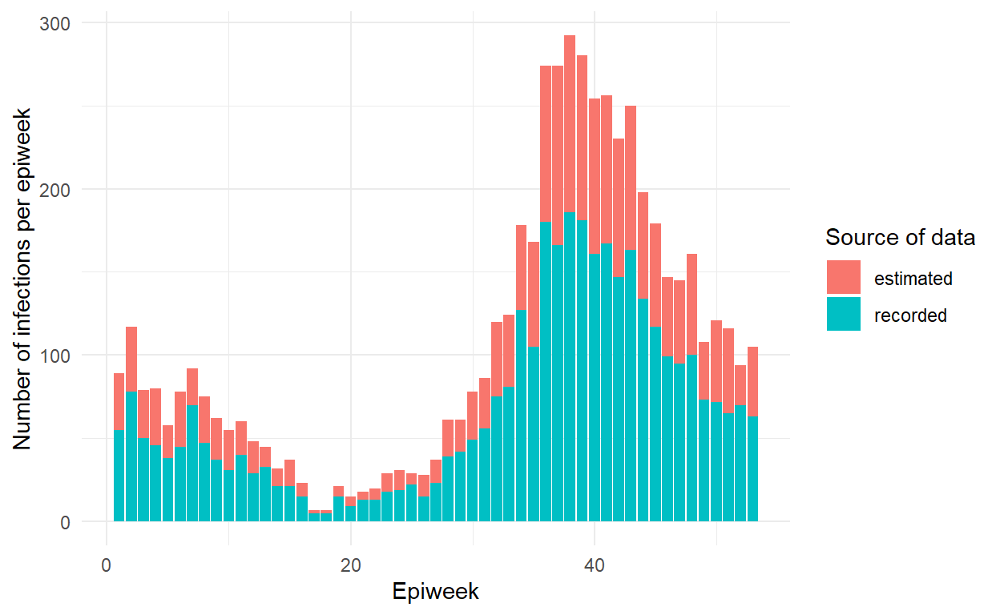

| ID: | Password: | ||||
|
|
|||||
Introduction to R for Applied Epidemiology and Public Health
Data cleaning and core functions

Welcome
Welcome to the course “Introduction to R for applied epidemiologists”, offered for free by Applied Epi - a non-profit organisation that offers open-source tools, training, and support to frontline public health practitioners.
This interactive tutorial focuses on cleaning of datasets often encountered by applied epidemiologists and public health practitioners, such as outbreak linelists, surveillance, and laboratory data.
Target Audience
This course is designed with the following objectives:
- To be friendly to people who have never used a programming language before
- To teach R emphasizing examples, datasets, and challenges commonly faced by applied epidemiologists
- To be modular - so that you can skip to section most relevant to you
If this is your first introduction to R programming, please consider first completing our [R Setup and Data Import tutorial], which introduces R, RStudio, R projects, R code syntax, and explains how to import a dataset into R.
Other languages
This course is available…
Offline / Online
You can access this tutorial offline by downloading our R package … If viewing offline, you can view the videos by doing …
Learning goals
In this tutorial you will learn and practice:
- Using the pipe operator (
%>%) to pass the dataset from one cleaning function to another - The core tidyverse R functions used to reduce, clean, and modify dataframes
- How to manipulate dates in order to clean and translate between units of time (days/months/years) with the lubridate package
- The use of descriptive analysis and summary statistics with the janitor package in order to summarize your data
This tutorial adapts the Data cleaning and core functions section of our free Epidemiologist R Handbook, which is available for use offline as well.
Data consent
We continually improve these tutorials by collecting your entries and submitted answers to the quiz questions. By continuing, you consent to this collection and use.
To continue anonymously… do XYZ.
Who made this course
This course is designed by epidemiologists with decades of ground-level experience in outbreak response and local public health work.

Data used and directory structure
In this tutorial we will use the following datasets. Please take a few minutes to review the structure and content of each dataset before continuing.
Use the arrows on the right to scroll through hidden columns. Note that these are “raw” (messy) datasets that mimic problems commonly found in real-life epidemiological datasets.
A “linelist” of cases in a fictional (not real) Ebola outbreak
A “linelist” is a term used in applied epidemiology to refer to a table that contains key information about each case or suspect case in an outbreak. Each row represents one case, and the columns contain variables such as age, sex, date of symptom onset, outcomes, etc.
This dataset contains 6611 rows and 28 columns. Below are the first 5 rows:
Click to download the raw dataset for your own practice.
Click to download the clean dataset as an .rds file for your own practice. A .rds file is an R-specific file type that preserves column classes. This ensures you will have only minimal cleaning to do after importing the data into R.
Aggregated data from malaria surveillance in a fictional country
Aggregated data in epidemiology usually means a table of counts for each facility, or district, etc. Sometimes, the counts can also be per day, week, or month.
In this fictional dataset, each facility reported daily case counts of rapid-test (RDT)-confirmed malaria. Thus, each row represents the number of cases for a specific facility on a specific day.
This dataset contains 3038 rows and 10 columns. Below are the first 5 rows:
Click to download the clean malaria counts dataset as an .rds file for your own practice. A .rds file is an R-specific file type that preserves column classes. This ensures you will have only minimal cleaning to do after importing the data into R.
Directory structure
Photo or GIF of directory structure
Accessing example data
Here is how to access the example data
Tidy Data
We highly recommend doing our tutorial on Tidy Data in Applied Epidemiology. Collecting, formatting, and preparing your dataset before importing it into R is a critical step! LINK VIDEO TEASER
Install and Load R packages
To use basic functions with public health data, the tidyverse metapackage is very useful. Tidyverse loads the dplyr, ggplot2, and other packages that are useful in epi data analysis.
We’ve preloaded the below packages for now. Installation and loading of these packages is described on the EpiRHandbook Suggested Packages page.
In this assignment we’ll work with X R packages, let’s load them!
pacman::p_load(___)pacman::p_load(rio, here, janitor, tidyverse)Recommended R packages for public health
See this Epi R Handbook LINK for our recommended packages.
Import data
https://www.epirhandbook.com/en/import-and-export.html Import that data and save it as “raw” file
To import data from a sub-folder, the import() command should be modified so that it correctly tells R where to search for this file. This is done using the here() function.
linelist_raw <- import(here("data", "linelist_raw.xlsx")) # import data and save as named objectDates
Working with dates in R requires more attention than any other object class. Below, we offer some tools and example to make this process less painful. Luckily, dates can be wrangled easily with practice, and with a set of helpful packages such as lubridate.
Upon import of raw data, R often interprets dates as character objects - this means they cannot be used for general date operations such as making time series and calculating time intervals. To make matters more difficult, there are many ways a date can be formatted and you must help R know which part of a date represents what (month, day, hour, etc.).
Dates in R are their own class of object - the Date class. It should be noted that there is also a class that stores objects with date and time. Date time objects are formally referred to as POSIXt, POSIXct, and/or POSIXlt classes (the difference isn’t important). These objects are informally referred to as datetime classes.
- It is important to make R recognize when a column contains dates.
- Dates are an object class and can be tricky to work with.
- Here we present several ways to convert date columns to Date class.
Current date To get the current “system” date you using Sys.Date(), and to get the time, Sys.time(). Alternatively you can return the date with today() and the time with now() from the lubridate package.
Try it out now, type Sys.Date() and today() on different lines and click submit.
Sys.Date()
today()Converting to a date
After importing a dataset into R, date column values may look like “1989/12/30”, “05/06/2014” or “13 Jan 2020”. In all these cases, R is likely still treating these as character values. R must be told that these are dates, and the format that the dates are in (which is Day, Month and Year).
By default, the values of class Date are displayed as YYYY-MM-DD, later in this section we will discuss how to change these.
base R
as.Date() is the base R function to convert an object or column to class Date. This requires:
- You specifiy the existing format of the raw character date
- If used on a character column all values must have the same exact format (if this is not the case try
guess_dates()from the linelist package)
First, check the class of your column with class() from base R. Second, within the as.Date() function, use the format = argument to tell R the current format of the character date.
# Convert to class date
linelist <- linelist %>%
mutate(date_onset = as.Date(date_onset, format = "%d/%m/%Y"))Most of the strptime abbreviations are listed below. You can see the complete list by running ?strptime.
- %d = Day number of month (5, 17, 28, etc.)
- %j = Day number of the year (Julian day 001-366)
- %a = Abbreviated weekday (Mon, Tue, Wed, etc.)
- %A = Full weekday (Monday, Tuesday, etc.) %w = Weekday number (0-6, Sunday is 0)
- %u = Weekday number (1-7, Monday is 1)
- %W = Week number (00-53, Monday is week start)
- %U = Week number (01-53, Sunday is week start)
- %m = Month number (e.g. 01, 02, 03, 04)
- %b = Abbreviated month (Jan, Feb, etc.)
- %B = Full month (January, February, etc.)
- %y = 2-digit year (e.g. 89)
- %Y = 4-digit year (e.g. 1989)
- %h = hours (24-hr clock)
- %m = minutes
- %s = seconds %z = offset from GMT
- %Z = Time zone (character)
Remember that you need to also get the date separator (/, -, space etc) correct in order to convert your dates ### lubridate
The lubridate package makes handling dates and times a lot easier than using base R, and is recommended whenever you are working with dates
**lubridate* has several helper functions designed to convert character objects to dates in a more intuitive and lenient way. These functions are specific to the rough date format, but allow for a variety of separators, and synonyms for dates (e.g. 01 vs Jan vs January) - they are named after abbreviations of date formats.
The ymd() function converts date values supplied as year, month, day. 2020-10-11 2020-10-11 The mdy() does the same but in the order of month, day, year. 2020-10-11 and the dmy() in the format as day, month , year 2020-10-11
Within a pipe chain, it may look like this
linelist <- linelist %>%
mutate(date_onset = lubridate::ymd(date_onset))You can then check the conversion has applied correctly by using class().
Note that the above functions work best with 4-digit years. 2-digit years can produce unexpected results, as lubridate attempts to guess the century.
To convert a 2-digit year into a 4-digit year (all in the same century) you can convert to class character and then combine the existing digits with a pre-fix using str_glue() from the stringr package (see Characters and strings). Then convert to date.
two_digit_years <- c("15", "15", "16", "17")
str_glue("20{two_digit_years}")## 2015
## 2015
## 2016
## 2017How would you use to convert all columns that containe date_ to a year, month, day Date class?
A more compact way of doing this would be to use a tidyselect helper function such as across(). See earlier exercises where we converted columns to as.Character().linelist %>%
mutate(across(.cols = contains("date_"), .fns = lubridate::ymd))Combine columns
You can use the lubridate functions make_date() and make_datetime() to combine multiple numeric columns in one date column. For example, if you have the numeric columns onset_day, onset_month and onset_year in the dataframe linelist
linelist <- linelist %>%
mutate(onset_date = make_date(year = year(date_onset), month = month(date_onset), day = day(date_onset)))Excel dates
In the background, most software store dates as numbers. R stores dates from an origin of 1st January, 1970. Thus, if you run as.numeric(as.Date("1970-01-01)) you will get 0.
Microsoft Excel stores dates with an origin of either December 30, 1899 (Windows) or January 1, 1904 (Mac), depending on your operating system. See this Microsoft guidance for more information.
Excel dates often import into R as these numeric values instead of as characters. If the dataset you imported from Excel shows dates as numbers or characters like “41369”… use as.Date() (or lubridate’s as_date() function) to convert, but instead of supplying a “format” as above, supply the Excel origin date to the argument origin =.
This will not work if the Excel date is stored in R as a character type, so be sure to ensure the number is class Numeric!
NOTE: You should provide the origin date in R’s default date format (“YYYY-MM-DD”).
# An example of providing the Excel 'origin date' when converting Excel number dates
data_cleaned <- linelist %>%
mutate(date_onset = as.numeric(date_onset)) %>% # ensure class is numeric
mutate(date_onset = as.Date(date_onset, origin = "1899-12-30")) # convert to date using Excel originMessy dates
Often dates are in a variety of different formats, the function guess_dates() from the linelist package attempts to read these and convert them to a standard format.
For example guess_dates() would see a vector of the following character dates “03 Jan 2018”, “07/03/1982”, and “08/20/85” and convert them to class Date as: 2018-01-03, 1982-03-07, and 1985-08-20.
linelist::guess_dates(c("03 Jan 2018",
"07/03/1982",
"08/20/85"))## [1] "2018-01-03" "1982-03-07" "1985-08-20"Working with the date-time class
Converting columns to the date-time class follows a similar format to the date class with lubridate functions, only with _h (only hours supplied), _hm (hours and minutes supplied), or _hms (hours, minutes, and seconds supplied) appended to the end (e.g. dmy_hms()).
ymd_h("2020-01-01 16hrs")## [1] "2020-01-01 16:00:00 UTC"ymd_h("2020-01-01 4PM")## [1] "2020-01-01 16:00:00 UTC"dmy_hm("01 January 2020 16:20")## [1] "2020-01-01 16:20:00 UTC"mdy_hms("01 January 2020, 16:20:40")## [1] "2020-01-20 16:20:40 UTC"When working with a dataframe, time and date columns can be combined to create a datetime column using str_glue() from stringr package and an appropriate lubridate function.
In this example, the linelist dataframe has a column in format “hours:minutes”. To convert this to a datetime we follow a few steps:
- Create a “clean” time of admission column with missing values filled-in with the column median. We do this because lubridate won’t operate on missing values.
- Combine it with the column date_hospitalisation, and then use the function ymd_hm() to convert.
# time_admission is a column in hours:minutes
linelist <- linelist %>%
# when time of admission is not given, assign the median admission time
mutate(
time_admission_clean = ifelse(
is.na(time_admission), # if time is missing
median(time_admission), # assign the median
time_admission # if not missing keep as is
)) %>%
# use str_glue() to combine date and time columns to create one character column
# and then use ymd_hm() to convert it to datetime
mutate(
date_time_of_admission = str_glue("{date_hospitalisation} {time_admission_clean}") %>%
ymd_hm()
)Can you order these functions in increasing order by the time they output? For example ymd_h("2020-01-01 16") would output “2020-01-01 16:00:00 UTC” which is before the output of ymd_hm("2020-01-01 16.05") which would output “2020-01-01 16:05:00 UTC” and so would be placed before.
Convert times alone
If your data only contains character time (hours, minutes, seconds), you can convert and manipulate these as times using strptime() from base R. For example, to get the difference between these two times:
# raw character times
time1 <- "13:45"
time2 <- "15:20"
# Times converted to a datetime class
time1_clean <- strptime(time1, format = "%H:%M")
time2_clean <- strptime(time2, format = "%H:%M")
# Difference is of class "difftime" by default, here converted to numeric hours
as.numeric(time2_clean - time1_clean) # difference in hours## [1] 1.583333Extract time
You can extract the elements of a time with hour(), minute() and second() from lubridate.
Here is an example of extracting the hour, and then classifing by part of the day. We begin with the column time_admission, which is class Character in format “HH:MM”. First, the strptime() is used as described above to convert the characters to datetime class. Then, the hour is extracted with hour(), returning a number from 0-24. Finally, a column time_period is created using logic with case_when() to classify rows into Morning/Afternoon/Evening/Night based on their hour of admission.
linelist <- linelist %>%
mutate(hour_admit = hour(strptime(time_admission, format = "%H:%M"))) %>%
mutate(time_period = case_when(
hour_admit > 06 & hour_admit < 12 ~ "Morning",
hour_admit >= 12 & hour_admit < 17 ~ "Afternoon",
hour_admit >= 17 & hour_admit < 21 ~ "Evening",
hour_admit >=21 | hour_admit <= 6 ~ "Night"))Practice
We want to estimate the time from infection to onset. In order to do this, can you convert the columns date_infection and date_onset to Date objects, and then subtract date_infection from date_onset to create a new column, time_to_symptoms, and display only this column?
After converting the values from character class to Date, you can simply subtract the columns within mutatelinelist <- linelist %>%
mutate(date_infection = ymd(date_infection),
date_onset = ymd(date_onset),
time_to_symptoms = date_onset - date_infection) %>%
select(time_to_symptoms)Working with dates
Once converted you can extract aspects such as the year, month, day, weekday, week etc.
3 3 5
You can also extract time components from a datetime object or column. This can be useful if you want to view the distribution of admission times.
15 12 44.4886341
Date math
Date math is simple once you have converted the dates, to add on a certain number of days, weeks, months or years you can use the functions days(), weeks(), months(), years().
2022-03-06 2022-06-03 2025-03-03
and again the same for adding on time
2022-03-03 18:12:44 2022-03-03 15:15:44 2022-03-03 15:12:47
Date intervals
The differences between dates can be calculated by
- Ensuring both dates are of class dates
- Use subtraction to return the difftime difference between two dates
- If necessary, convert to numeric class to perform subsequent calculations
output <- Sys.Date() - ymd("2020-02-20")
output # print## Time difference of 742 daysclass(output)## [1] "difftime"To do subsequent operations on a “difftime”, convert it to numeric with as.numeric().
This can all be brought together to work with data - for example:
linelist_delay <- linelist %>%
# convert date of onset from character to date objects by specifying ymd format
mutate(date_onset = ymd(date_onset),
date_hospitalisation = ymd(date_hospitalisation)) %>%
# filter out all cases without onset in march
filter(month(date_onset) == 3) %>%
# find the difference in days between onset and hospitalisation
mutate(days_onset_to_hosp = date_hospitalisation - date_onset)
# calculate the median number of days to hospitalisation for all cases where data are available
median(linelist_delay$days_onset_to_hosp, na.rm = T)## Time difference of 1 daysDate display
Once dates are the correct class, you often want them to display differently, for example to display as “Monday 05 January” instead of “2018-01-05”. You may also want to adjust the display in order to then group rows by the date elements displayed - for example to group by month-year.
format()
Adjust date display with the base R function format(). This function accepts a character string (in quotes) specifying the desired output format in the “%” strptime abbreviations (the same syntax as used in as.Date()). Below are most of the common abbreviations.
- %d = Day number of month (5, 17, 28, etc.)
- %j = Day number of the year (Julian day 001-366)
- %a = Abbreviated weekday (Mon, Tue, Wed, etc.)
- %A = Full weekday (Monday, Tuesday, etc.) %w = Weekday number (0-6, Sunday is 0)
- %u = Weekday number (1-7, Monday is 1)
- %W = Week number (00-53, Monday is week start)
- %U = Week number (01-53, Sunday is week start)
- %m = Month number (e.g. 01, 02, 03, 04)
- %b = Abbreviated month (Jan, Feb, etc.)
- %B = Full month (January, February, etc.)
- %y = 2-digit year (e.g. 89)
- %Y = 4-digit year (e.g. 1989)
- %h = hours (24-hr clock)
- %m = minutes
- %s = seconds %z = offset from GMT
- %Z = Time zone (character)
Month-Year
To convert a Date column to Month-year format, we suggest you use the function as.yearmon() from the zoo package. This converts the date to class “yearmon” and retains the proper ordering. In contrast, using format(column, "%Y %B") will convert to class Character and will order the values alphabetically (incorrectly).
Below, a new column yearmonth is created from the column date_onset, using the as.yearmon() function. The default (correct) ordering of the resulting values are shown in the table.
##
## Apr 2014 May 2014 Jun 2014 Jul 2014 Aug 2014 Sep 2014 Oct 2014 Nov 2014
## 7 64 100 226 528 1070 1112 763
## Dec 2014 Jan 2015 Feb 2015 Mar 2015 Apr 2015
## 562 431 306 277 186In contrast, you can see how only using format() does achieve the desired display format, but not the correct ordering.
##
## Apr 2014 Apr 2015 Aug 2014 Dec 2014 Feb 2015 Jan 2015 Jul 2014 Jun 2014
## 7 186 528 562 306 431 226 100
## Mar 2015 May 2014 Nov 2014 Oct 2014 Sep 2014
## 277 64 763 1112 1070Epidemiological weeks
lubridate
We generally recommend using the floor_date() function from lubridate, with the argument unit = "week". This rounds the date down to the “start” of the week, as defined by the argument week_start =. The default week start is 1 (for Mondays) but you can specify any day of the week as the start (e.g. 7 for Sundays). floor_date() is versatile and can be used to round down to other time units by setting unit = to “second”, “minute”, “hour”, “day”, “month”, or “year”.
Which of these uses of floor_date() will result in rounding the date to the start of the week as a Thursday?
The returned value is the start date of the week, in Date class. Date class is useful when plotting the data, as it will be easily recognized and ordered correctly by ggplot().
If you are only interested in adjusting dates to display by week in a plot, see the section in this page on Date display. For example when plotting an epicurve you can format the date display by providing the desired strptime “%” nomenclature. For example, use “%Y-%W” or “%Y-%U” to return the year and week number (given Monday or Sunday week start, respectively).
Weekly counts
For example, to work out the weekly cases we carry out the following operations:
- Create a new ‘week’ column with
mutate(), usingfloor_date()withunit = "week" - Get counts of rows (cases) per week with
count(); filter out any cases with missing date - Finish with
complete()from tidyr to ensure that all weeks appear in the data - even those with no rows/cases. By default the count values for any “new” rows are NA, but you can make them 0 with thefill = argument, which expects a named list (below,nis the name of the counts column).
# Make aggregated dataset of weekly case counts
weekly_counts <- linelist %>%
drop_na(date_onset) %>% # remove cases missing onset date
mutate(weekly_cases = floor_date( # make new column, week of onset
date_onset,
unit = "week")) %>%
count(weekly_cases) %>% # group data by week and count rows per group (creates column 'n')
tidyr::complete( # ensure all weeks are present, even those with no cases reported
weekly_cases = seq.Date( # re-define the "weekly_cases" column as a complete sequence,
from = min(weekly_cases), # from the minimum date
to = max(weekly_cases), # to the maxiumum date
by = "week"), # by weeks
fill = list(n = 0)) %>% # fill-in NAs in the n counts column with 0
head() #Display the top 6 entriesEpiweek alternatives
Note that lubridate also has functions week(), epiweek(), and isoweek(), each of which has slightly different start dates and other nuances. Generally speaking though, floor_date() should be all that you need. Read the details for these functions by entering ?week into the console.
Now imagine we want to create create a new variable, week_of_infection, that has the epiweek of date_infection. However, many of these dates are unknown (NA values). We had previously calculated the value time_to_symptoms by subtracting date_infection from date_onset and so we can use the median value of this to come up with a crude replacement for the date of infection.
Can you do the following:
- Create a new column called
estimated_or_recordedwhich if the value ofdate_infectionisNAit will be “estimated” or “recorded” if it is not. - If the column
estimated_or_recordedhas the value “estimated”, then we will use subtract themedian(time_to_symptoms)fromdate_onsetto fill in the NA value in a new columndate_infection_updated - Convert
date_infection_updatedto the epiweek in a new columnweek_infection.
linelist %>%
drop_na(date_onset) %>%
mutate(date_infection = ymd(date_infection),
date_onset = ymd(date_onset),
time_to_symptoms = as.numeric(date_onset - date_infection)) #Add in additonal arguments within this mutateYou will want to use two if_else() statements before you use the epiweek() function. Remember the order is important!linelist %>%
drop_na(date_onset) %>%
mutate(date_infection = ymd(date_infection),
date_onset = ymd(date_onset),
time_to_symptoms = as.numeric(date_onset - date_infection),
estimated_or_recorded = if_else(
is.na(date_infection),
"estimated",
"recorded"),
date_infection_updated = if_else(
estimated_or_recorded == "estimated",
date_onset - days(median(time_to_symptoms, na.rm = T)),
date_infection
),
week_infection = epiweek(date_infection_updated))This could then allow us to plot an epicurve of the week_infection, highlighting the number of estimated and recorded values.

You might consider using the package aweek to set epidemiological weeks. It has the functions date2week() and week2date() in which you can set the week start day with week_start = "Monday". This package is easiest if you want “week”-style outputs (e.g. “2020-W12”). Another advantage of aweek is that when date2week() is applied to a date column, the returned column (week format) is automatically of class Factor and includes levels for all weeks in the time span (this avoids the extra step of complete() described above). However, aweek does not have the functionality to round dates to other time units such as months, years, etc.
Converting date/time zones
When data is present in different time time zones, it can often be important to standardise this data in a unified time zone. This can present a further challenge, as the time zone component of data must be coded manually in most cases.
In R, each datetime object has a timezone component. By default, all datetime objects will carry the local time zone for the computer being used - this is generally specific to a location rather than a named timezone, as time zones will often change in locations due to daylight savings time. It is not possible to accurately compensate for time zones without a time component of a date, as the event a date column represents cannot be attributed to a specific time, and therefore time shifts measured in hours cannot be reasonably accounted for.
To deal with time zones, there are a number of helper functions in lubridate that can be used to change the time zone of a datetime object from the local time zone to a different time zone. Time zones are set by attributing a valid tz database time zone to the datetime object. A list of these can be found here - if the location you are using data from is not on this list, nearby large cities in the time zone are available and serve the same purpose.
https://en.wikipedia.org/wiki/List_of_tz_database_time_zones
# assign the current time to a column
time_now <- Sys.time()
time_now## [1] "2022-03-03 15:12:45 GMT"# use with_tz() to assign a new timezone to the column, while CHANGING the clock time
time_london_real <- with_tz(time_now, "Europe/London")
# use force_tz() to assign a new timezone to the column, while KEEPING the clock time
time_london_local <- force_tz(time_now, "Europe/London")
# note that as long as the computer that was used to run this code is NOT set to London time,
# there will be a difference in the times
# (the number of hours difference from the computers time zone to london)
time_london_real - time_london_local## Time difference of 0 secsLagging and leading calculations
lead() and lag() are functions from dplyr which help find previous (lagged) or subsequent (leading) values in a vector. This is useful when doing calculations of change/difference between time units. For example, the weekly increase in cases.
Let’s say you want to calculate the difference in cases between a current week and the previous one. The data are initially provided in weekly counts as shown below. When using lag() or lead() the order of rows in the dataframe is very important! - pay attention to whether your dates/numbers are ascending or descending
First, create a new column containing the value of the previous (lagged) week.
- Control the number of units back/forward with n = (must be a non-negative integer)
- Use default = to define the value placed in non-existing rows (e.g. the first row for which there is no lagged value). By default this is NA.
- Use order_by = TRUE if your the rows are not ordered by your reference column
counts <- weekly_counts %>%
mutate(cases_prev_wk = lag(n, n = 1))counts %>%
mutate(cases_prev_wk = lag(n, n = 1),
case_diff = n - cases_prev_wk) %>%
head()